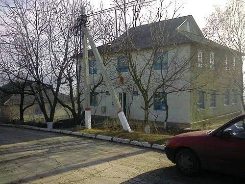

Primăria din Teșcureni servește nu doar ca un centru administrativ, ci și ca un motor vital al progresului și coeziunii în această comunitate rurală. Situată în inima satului, această instituție devine un simbol al angajamentului pentru dezvoltare și îmbunătățire continuă.
Primul pilon al importanței Primăriei este administrarea eficientă a resurselor locale. Prin intermediul unei gestionări responsabile a bugetului și a proiectelor, Primăria devine motorul financiar ce alimentează inițiativele cruciale pentru comunitate. De la îmbunătățirea infrastructurii la sprijinirea sectorului educațional, eforturile administrației locale se reflectă în fiecare colț al satului.
Un alt aspect crucial este rolul Primăriei în menținerea ordinii și siguranței în Teșcureni. Prin colaborare strânsă cu forțele de poliție locale și voluntarii, administrația se asigură că străzile sunt sigure și că locuitorii se bucură de un mediu securizat. Acest angajament pentru protecția comunității contribuie la creșterea calității vieții în Teșcureni.
Primăria devine, de asemenea, un canal vital de comunicare între autorități și locuitori. Prin organizarea ședințelor publice și prin facilitarea dialogului, administrația locală rămâne conectată la nevoile și dorințele comunității. Această transparență în procesul decizional consolidează încrederea locuitorilor în instituția lor locală.
De asemenea, Primăria joacă un rol esențial în promovarea culturii locale și a tradițiilor. Prin organizarea de evenimente culturale, festivaluri și expoziții, administrația aduce comunitatea împreună într-un cadru festiv, contribuind la afirmarea identității unice a satului Teșcureni.
În concluzie, Primăria din Teșcureni nu este doar un sediu administrativ, ci un pilon fundamental al progresului și coeziunii comunitare. Prin gestionarea resurselor cu înțelepciune, menținerea ordinii și siguranței, facilitarea comunicării și promovarea culturii locale, această instituție devine inima palpitantă a unei comunități în continuă evoluție.
